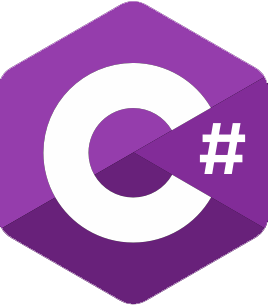
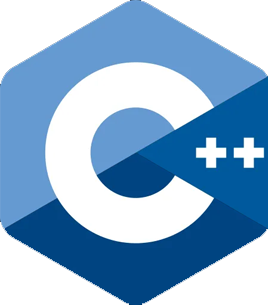
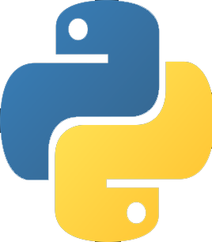
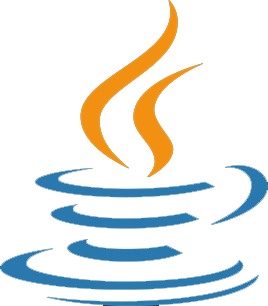

C#
2000
Андерс Хейлсберг
Microsoft
Современный, инновационный, кросс-платформенный объектно-ориентированный язык с открытым исходным кодом.
Подходит для:
Веб-разработки, десктопных и мобильных приложений, автоматизации, разработки игр, и многого другого.
C++
1995
Бьерн Страуструп
AT&T Bell Labs
Мощный и гибкий язык, расширяющий возможности C. Используется в играх, системах, приложениях и высоконагруженых сервисах.
Подходит для:
Игровой разработки, системного ПО, высокопроизводительных приложений, и конкурентного программирования.
Python
1991
Гвидо ван Россум
CWI, Нидерланды
Простой, читаемый и универсальный язык с огромным сообществом. Идеален для старта в программировании.
Подходит для:
Веб-разработки, анализа данных, автоматизации, машинного обучения, и многого другого.
JavaScript
1995
Брендан Айк
Netscape
Язык Веб-разработки, который оживляет сайты и интерфейсы. Базовый язык фронтенда и не только.
Подходит для:
Создания интерактивных сайтов, веб-приложений, мобильных и десктопных приложений.
Java
1995
Джеймс Гослинг
Sun Microsystems
Надёжный и платформонезависимый язык для крупных систем и корпоративных решений.